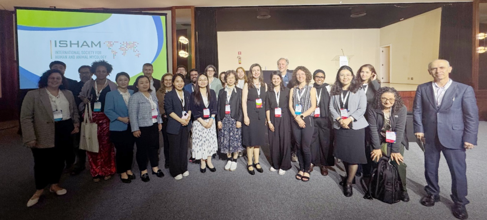
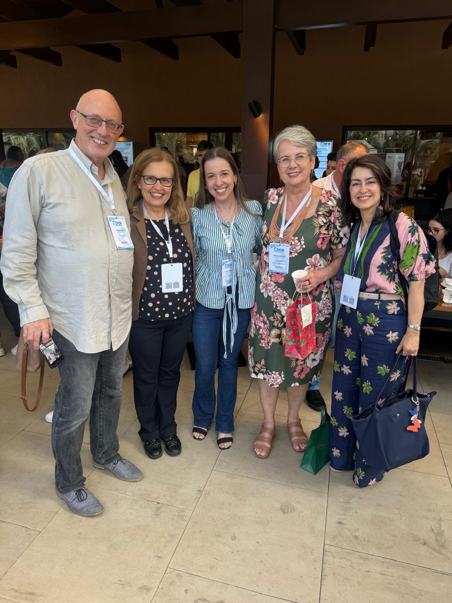

About the Project
Coordinator
Prof. Dra. Vania Aparecida Vicente
Federal University of Paraná (UFPR)
Thematic Line
VI. Research Networks for identification, monitoring and genetic sequencing of resistant strains throughout the national territory
Description
This project establishes a network for monitoring and detecting antimicrobial resistance (AMR) patterns in causative agents of infectious-parasitic diseases, preserved in reference collection repositories and in environmental samples from various Brazilian biomes. It uses metagenomic approach and NGS sequencing, aiming at the development of a widely accessible panel, with application of notification of the circulation of AMR genes and species in Brazilian macroregions.


